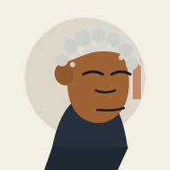
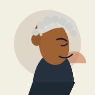

If the model is strong, the legal workflow is automatically safe.
Legal AI Daily
Lesson 1
Legal AI Is Not One Thing
The first lawyer move is to name which layer is actually moving.
Full premise
Inside a legal workplace, AI rarely arrives as a single thing. It arrives as a vendor update, a client request, a practice-group experiment, a workflow proposal, a new button inside a platform everyone already uses, and eventually as an evidence problem, because someone will need to show what legal allowed, what data moved, who reviewed the output, and what survived the decision.
The Situation
AI can mean many things.
Practice meeting
An adjacent group is piloting AI for contract review.
Client call
Legal is asked to summarize a hundred-page policy with AI.
Platform note
The vendor announces a legal reasoning engine.
Monday afternoon, the practice meeting is already running long when a junior associate mentions that the adjacent group is piloting AI for contract review.
That moment concerns the operating question behind the model: what system generates the language, what task has it been asked to perform, and where does legal judgment return?
Model
Language task
Tool
Usable surface
Governance
Evidence story
The model performs a bounded language task.
A model can produce a useful summary, classification, clause comparison, or intake draft, but the output still depends on the prompt, the data supplied, the retrieval layer, the vendor environment, and the user's ability to recognize when the answer has moved beyond the task legal allowed it to perform.
Interactive Lab
Separate the stack.
Inspect all four layers before moving on. The approval analysis changes with the layer.
Model
The model performs the language task.
A model generates, classifies, summarizes, compares, or transforms language based on the input it receives and the surrounding instructions it can see. The legal question is what information reaches it, what task it has been asked to perform, what uncertainty remains in the answer, and whether the user can recognize when the output has crossed from language support into legal judgment.
Policy
Input
Vendor
Scope
Review
Counsel
Logs
Record
Day-to-day example
The client sends a long policy and asks for a same-day summary. The model generates language, the interface lets the lawyer request and read it, the workflow determines whether the result becomes a matter note, a redline comment, a client-facing email, or nothing at all, and governance decides whether the policy text may enter the system, who may see the result, which review step must occur, and what record survives the task.
Sort the sentence before the hype.
Choose whether each sentence is true or a myth in a legal work setting.
A vendor demo can show tool polish without proving governance readiness.
The review path matters before AI output reaches a client or business team.
Once a tool is approved, every future use of it has the same risk profile.
Applied Scenario
The Policy Summary Request
A client asks for a same-day summary of a hundred-page policy. The work starts as an ordinary email, then becomes a data boundary, a tool use, a model task, a review path, and an approval record.
Policy Summary Request
Client email
Can legal summarize the new policy by today?
Policy.pdf
100 pages
Legal AI workspace
Prompt: summarize scope, exclusions, obligations.
Model task
Draft policy summary for internal review.
Status: draft output only
Counsel review
Check accuracy, privilege boundary, client-facing language, and whether the summary can leave the team.
Approval record
Legal can explain what moved and why.
Use case approved
Reviewer named
Data boundary logged
Output marked internal
Client email
The work begins as a simple request: summarize the policy by today.
Case file ready

Hold
Athena
Stop. Check the premise. The approval only means something if the movement, reviewer, and record survive.
Use the stack in judgment calls.
After the Monday practice meeting, someone forwards an approval note saying the firm can use a legal AI product for contract work. The deal team wants to upload confidential diligence files tomorrow. What should counsel ask before anyone opens the tool?
The client call ends, and the business team asks for an intake assistant that drafts routine answers while sending exceptions to counsel. Which layer does that routing describe?
Before you close the day, the platform vendor says its new legal reasoning engine "does not train on your data." The use case involves sensitive policy material. What should counsel review next?
The screen looks polished, the summary reads cleanly, and someone wants to send the output to the client. Which response best applies this lesson?
You can now name the work.
When someone says "AI," you can ask which layer they mean. That one move turns a vague conversation into one the room can act on.

Close
Athena
That conclusion can stand. The next AI conversation starts with the layer, the movement, and the record.